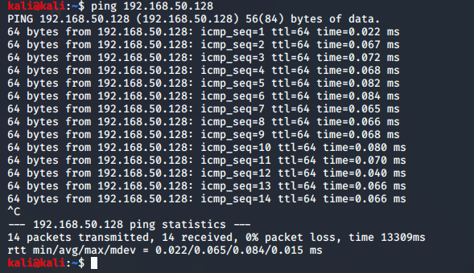

ifconfig

ping command:another word for ping is icmp

arp -a :shows ip address it talks to and mac address associated with it

it basically associates ip addresses with their mac adresses
netstat -ano:shows active connections running on your machine
(helps to show me whether machine is talking to somone on the port)

sudo route:tells u where ur traffic exits essentially